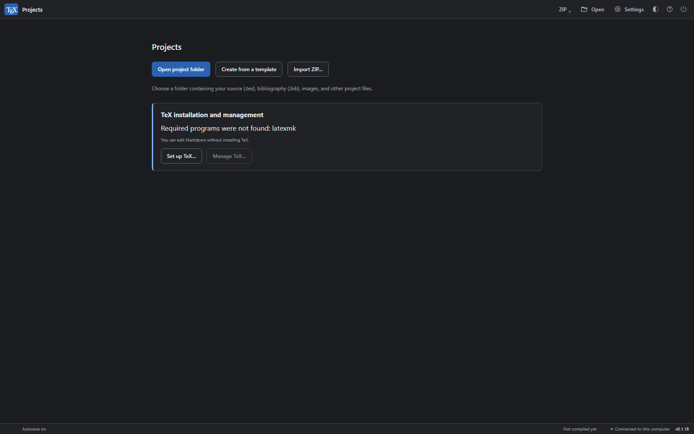
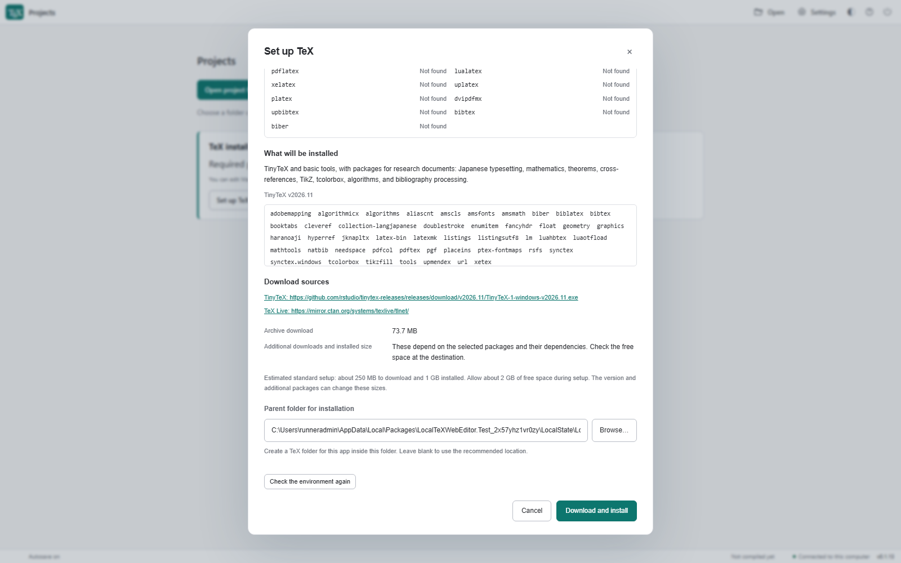
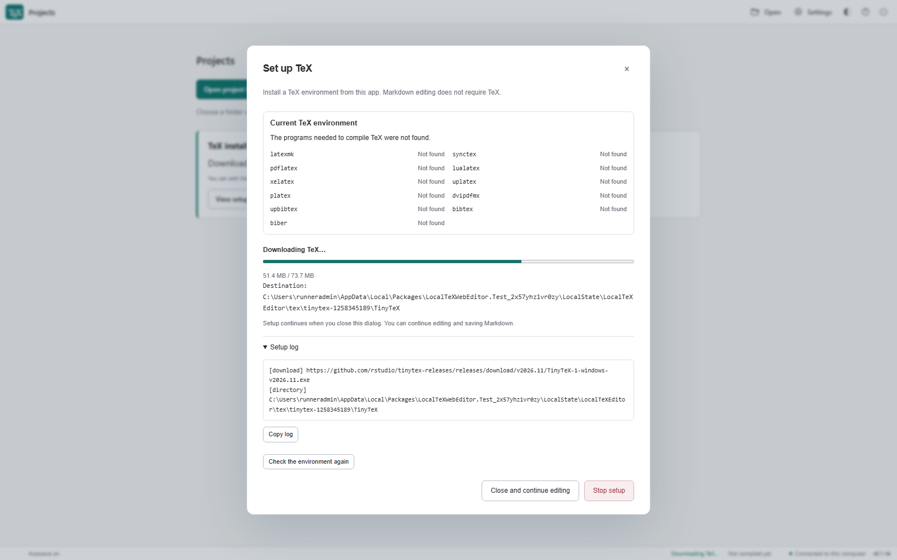
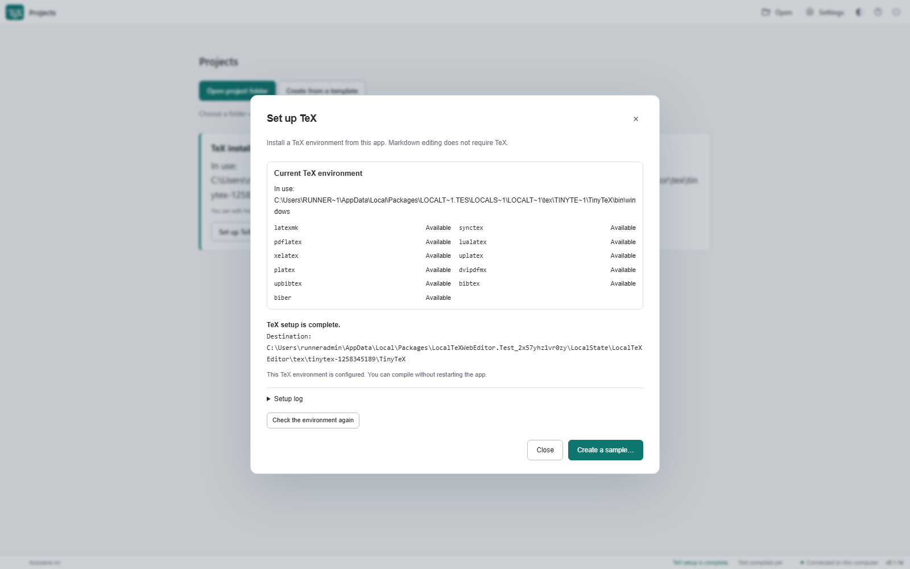
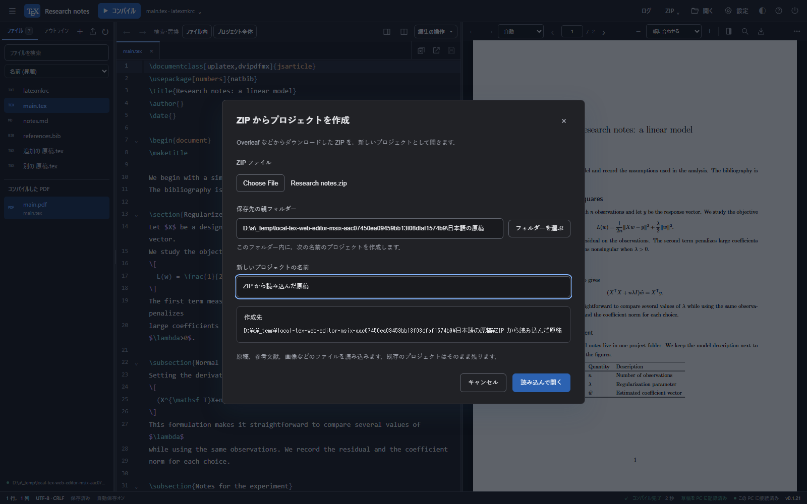
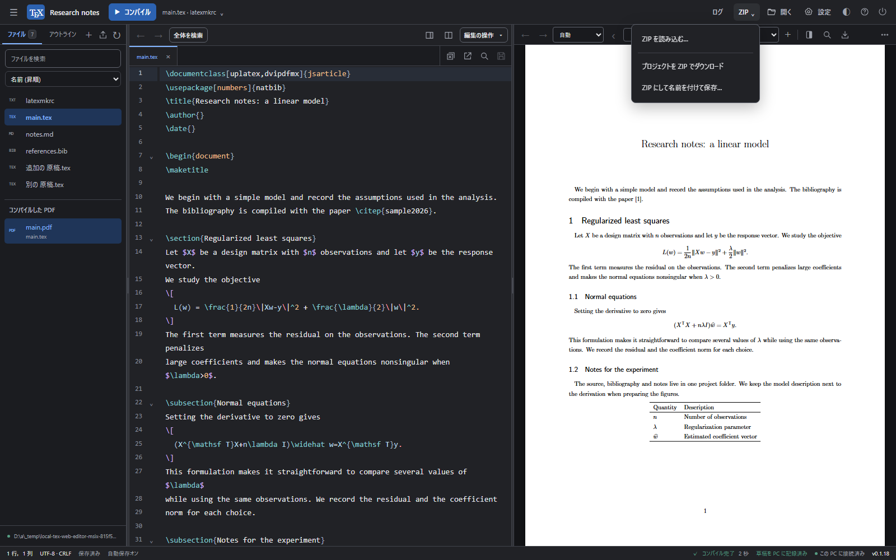
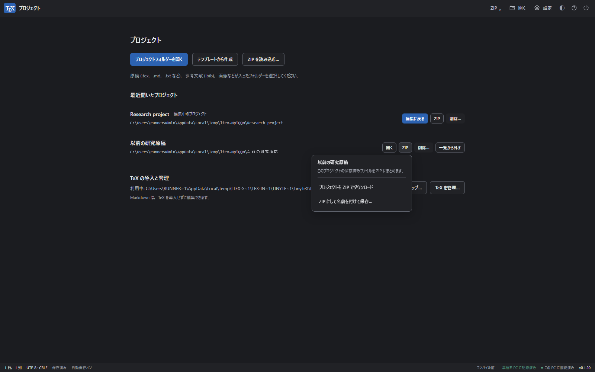

Local TeX Web Editor
TeX，Markdown，テキストを普段のブラウザで編集できる，完全無料のエディタです．原稿と PDF を並べて確認したり，Markdown の本文を直接編集したり，同じアプリでメモやテキストファイルを扱えます．
アプリを起動すると localhost のページが開きます．原稿は PC のプロジェクトフォルダーへ保存します．

このアプリの特徴
すべての機能を無料で使う
アプリ内購入，有料アップグレード，サブスクリプションはありません．Windows 版と macOS 版のすべての機能を無料で使えます．
普段のブラウザで動く軽量なアプリ
Go で作られた小さなアプリと，PC に入っているブラウザを組み合わせて動きます．VS Code のデスクトップ版は Electron を使います．本アプリはエディタと PDF ビューアーを既存のブラウザへ提供するため，配布物を小さくできます．VS Code や TeX 用の拡張機能を追加せずに，原稿を書き始められます．
TeX もアプリから導入する
ホームの Set up TeX… (TeX をセットアップ…) から，執筆とコンパイルに使うプログラムやパッケージを導入できます．完了するとその環境が自動で選ばれ，サンプルの原稿を開いてそのままコンパイルできます．すでにある TeX の環境も使えます．画面付きの導入手順 から始められます．
サービスの時間制限を気にせずコンパイルする
Overleaf の無料プランには コンパイル時間の上限 があります．本アプリでは手元の TeX を使い，アプリ側にもコンパイル時間の上限を設けていません．長い原稿も自分の PC で処理でき，必要なときに実行中のコンパイルを停止できます．
Markdown や普段のテキスト編集にも使う
メモや README，コード，設定ファイルの編集にも使えます．Markdown は本文の直接編集とソース編集を切り替えられ，テキストファイルにも保存，検索，草稿，履歴の機能を使えます．Markdown とテキストの編集は，TeX の導入前から始められます．
必要な環境と容量
以下の PC で，現在の Chrome または Edge を使います．TeX はアプリを開いてから アプリ内のセットアップ で準備できます．すでに TeX を使っている場合は， その環境を選ぶ手順 へ直接進めます．Markdown の編集とプレビューは TeX がなくても使えます．
| プラットフォーム | 対応環境 |
|---|---|
| Windows | Windows 10 / 11，x64 |
| macOS | macOS 12 以降， Apple Silicon / Intel |
Microsoft Store 版は，Windows 10 version 2004 (build 19041) 以降，または Windows 11 の x64 PC に対応しています．
| v0.1.20 | ZIP の容量 | 展開後のアプリ本体 |
|---|---|---|
| Windows x64 | 9.65 MB | 18.49 MB |
| macOS，両 CPU 共通 | 18.58 MB | 39.60 MB |
容量は小数点以下 2 桁で表示しています．対象のファイルは v0.1.20 の配布ファイル から取得できます．1 MB = 1,000,000 bytes．TeX Live，原稿，草稿，編集履歴，テンプレート，コンパイル中のファイルにも容量を使います．アプリにはエディタと PDF ビューアーが含まれており，Python，Node.js，Go，VS Code の導入は不要です．
アプリを入手して起動する
Windows (Microsoft Store): Microsoft Store からインストールし，スタートメニューの Local TeX Web Editor を開きます．
Windows (ZIP): ZIP を展開し， local-tex-web-editor.exe をダブルクリックします．初回の起動時に，スタートメニューとデスクトップへショートカットが作成されます．アプリの設定からも作成できます．
Mac: ZIP を展開し， Local TeX Web Editor.app を「アプリケーション」へ移して，Finder または Spotlight から開きます．
ZIP から取得したアプリの初回起動が止まる場合
Windows ZIP 版で SmartScreen の 「Windows によって PC が保護されました」 が表示された場合は， 「詳細情報」 でアプリ名を確認し， 「実行」 を選びます．
詳しくは Windows の起動手順 と Microsoft の案内 を参照してください．
Mac については， macOS の起動手順 と Apple の案内 があります．
普段使うブラウザにホームが開きます．
初回は英語とダークモードで表示します． Settings → Language / 言語設定 で 日本語 を選ぶと，その場で表示が切り替わります． 「設定を保存して反映」 で次回にも使い， キャンセル すると保存済みの言語へ戻ります．配色は Settings → Appearance (設定 → 外観) で変更できます．
TeX がない場合: 下の 画面付きの導入手順 へ進みます．アプリが TeX をダウンロード・インストールし，完了するとその環境が自動で選ばれます．
TeX がすでにある場合: 設定でその環境を選ぶ手順 へ進みます．
Markdown だけを使う場合は，ホームの Create from a template (テンプレートから作成) で Markdown notes (Markdown のメモ) を選んで新しいプロジェクトを作るか， 既存のフォルダーを開きます．その後は 本文を直接編集 できます．
TeX の準備と最初の PDF
TeX がない場合は，アプリからダウンロード・インストールします．完了するとその環境が自動で選ばれます．すでに TeX がある場合は， 既存の環境を選びます．その後はテンプレートから原稿を作り，コンパイルして PDF を確認できます．
TeX がない場合: アプリから導入する
以下の画面は，初回と同じ英語表示です． Settings → Language / 言語設定 で日本語へ切り替えられます．本文には画面の英語ラベルと日本語ラベルを併記しています．各画像を押すと元のサイズで開きます．
-
ホームからセットアップを開く
TeX のロゴ を押してホームを開き， TeX installation and management (TeX の導入と管理) の Set up TeX… (TeX をセットアップ…) を選びます．設定にも同じボタンがあります． Manage TeX… (TeX を管理…) は，TeX の環境が選ばれると使えるようになります．

新しく導入するときは Set up TeX…，選択中の環境を管理するときは Manage TeX… を使います．画像を押すと元のサイズで開きます． -
現在のプログラムと導入する内容を確認する
Current TeX environment (現在の TeX) には，PC で見つかったプログラムを表示します． What will be installed (インストールするもの) で，TinyTeX と追加するパッケージを確認します．標準の構成には
latexmk，SyncTeX，日本語の組版，数式，図，定理，文献処理などのパッケージが含まれます．この画面では導入する内容を確認します．次の手順で保存先を確認し， Download and install (ダウンロードしてインストール) を押すと取得が始まります．

現在使えるプログラムと，新しい環境へ導入するパッケージを確認します．画像を押すと元のサイズで開きます． -
取得元と保存先を確認して開始する
セットアップの画面内を下へスクロールし， Download sources (ダウンロードの取得元) と Parent folder for installation (インストール先の親フォルダー) を確認します．公式の TinyTeX v2026.11 と TeX Live のパッケージを使います．表示された親フォルダーを使うか， Browse… (参照…) で別の場所を選びます．その中にアプリ用の TeX フォルダーを作り，通常のユーザー権限で導入します．
標準の構成では，Windows で約 250 MB，Mac で約 300 MB のダウンロード，導入後に約 1 GB，導入中に約 2 GB の空き容量が目安です．取得する版や追加パッケージによって増減します．保存先を確認し， Download and install (ダウンロードしてインストール) を押します．

画面内を下へスクロールし，取得元と保存先を確認してから開始します．画像を押すと元のサイズで開きます． -
進捗を確認し，必要に応じて編集を続ける
取得した容量に続き，ファイルの展開，パッケージの追加，プログラムの確認など，進んでいる段階が表示されます． Setup log (セットアップのログ) を開くと詳しい内容を読めます．
Close and continue editing (閉じて編集を続ける) で，導入中も Markdown を編集して保存できます．ホームや設定の View setup progress (セットアップの進捗を見る)，または編集画面の下にある進捗表示から戻れます．中断する場合は Stop setup (セットアップを停止) を選びます．停止や失敗の後は， Review and try again… (内容を確認して再試行…) から導入内容を確認し直せます．

現在の段階とログで，導入が進んでいる様子を確認できます．画像を押すと元のサイズで開きます． -
セットアップの完了を確認する
TeX setup is complete. (TeX のセットアップが完了しました．) と表示されるまで待ちます．導入した環境が選ばれ，利用するプログラムの確認が終わると，すぐにコンパイルできます．この画面で保存先とセットアップのログも確認できます．
プロジェクトを開く前にホームから導入を始めた場合は， Create a sample… (サンプルを作成…) を押して Start from a template (テンプレートから始める) を開きます．

導入した TeX が，このアプリでコンパイルする環境として選ばれます．画像を押すと元のサイズで開きます． -
テンプレートから最初の原稿を作り，コンパイルする
最初の原稿を作る場合は，テンプレートの一覧で Japanese document (日本語の文書) または English article (英語の文書) を選びます．ホームの Create from a template (テンプレートから作成) からも同じ画面を開けます． Destination folder (保存先のフォルダー) の横にある Choose a folder (フォルダーを選ぶ) を押し，「ドキュメント」などの親フォルダーを選びます． New project folder name (新しいプロジェクトのフォルダー名) に
my-first-paperなど，まだ使っていない名前を入力して Create and open (作成して開く) を押します．テンプレートに合うコンパイラーが選ばれ，プロジェクトが開きます．ファイル一覧のmain.texを選びます．上部の Compile (コンパイル) を押します．Windows の Ctrl + Enter，Mac の Cmd + Enter でも実行できます．原稿を保存してから TeX が実行されます．
原稿の隣に PDF が表示されます．PDF の本文をダブルクリックすると，SyncTeX で原稿の対応する行へ移れます．パッケージがないというエラーが出た場合は， アプリから追加 して，もう一度コンパイルします．PDF を作った後の操作は， 編集とプレビューの使い方 に続きます．
TeX 文書を開いて Compile を押すと，原稿の隣で PDF を確認できます．画像を押すと元のサイズで開きます．


導入や追加パッケージの取得にはインターネット接続を使います．TinyTeX の配布物は展開前に SHA-256 を確認します．原稿は PC に保存します．取得時の通信と保存するデータについては， プライバシーポリシー に記載しています．
TeX がすでにある場合: その環境を選ぶ
Settings (設定) を開き， TeX Live bin folder (TeX Live の bin フォルダー) を確認します．空欄では自動検索します．別のエディタで TeX を使えている場合は，同じプログラムのフォルダーを指定します．Windows では C:\texlive\2025\bin\windows，Mac では /Library/TeX/texbin など， latexmk があるフォルダーです．
Save and apply settings (設定を保存して反映) を選び，設定を開き直して latexmk と SyncTeX のパスを確認します． Manage TeX… (TeX を管理…) では，選択中の環境とパッケージを確認できます．その後は テンプレートから新しい原稿を作る か， 既存のプロジェクトを開く 手順へ進みます．必要なツールが足りない場合は，設定の 「SyncTeX を追加…」 や 「TeX パッケージを追加」 から，利用できる追加操作へ進めます．
選択中の環境のパッケージを管理する
ホームや設定の Manage TeX… (TeX を管理…) で，実際の保存先と導入済みのパッケージを確認できます． Packages to add (追加するパッケージ) に siunitx cleveref などの TeX Live のパッケージ名をスペースで区切って入力します． Review packages to add… (追加する内容を確認…) から一覧と追加先を確認し， Add these packages (確認したパッケージを追加) で開始します．ファイルを入れ直す場合は，確認画面へ進む前に同じパッケージを再取得する項目を選びます．
設定の Add TeX packages (TeX パッケージを追加) には， latexmk and SyncTeX (latexmk と SyncTeX) と Japanese typesetting (日本語の組版) を選ぶボタンもあります．SyncTeX が足りない場合は， Add SyncTeX… (SyncTeX を追加…) から利用できる追加操作へ進めます．追加が完了したら原稿へ戻り，もう一度コンパイルします．
パッケージを削除するときは，一覧で選択して 「選んだパッケージを削除…」 を開きます．変更する内容と依存関係を確認して， 「表示したパッケージを削除」 を選びます．アプリは実行前にパッケージの記録を再確認します．
アプリから導入した TeX と，既存の TeX Live，MacTeX，TinyTeX に対応します．既存の環境では，設定済みの取得先を使います．CTAN との年度の不一致が出た場合には，導入済みの TeX Live と同じ年度の配布元へ再試行します．独自の取得先がある場合は，その設定を使います．
Windows の ZIP 版と Mac 版では，共用する環境の変更に管理者権限が必要な場合，OS が承認を求めます．Microsoft Store 版では，その環境の Open the TeX management tool (TeX の管理ツールを開く) を選びます．公式ツールでパッケージを追加した後，エディタで Refresh packages (パッケージ一覧を更新) を押します． Install TeX for this app… (アプリ用の TeX を導入…) から，自分のフォルダーに新しい環境を導入することもできます．

TeX の環境全体を削除する
「TeX を管理…」 の 「TeX の環境全体を削除…」 から，実際の保存先，項目数，容量，他のアプリへの影響を確認します．アプリ内で削除を開始する場合は，確認のチェックと，表示されたフォルダー名の入力が必要です．
アプリが導入した TeX に記録外のファイルがある場合は，削除を止めて内容を確認できます．既存の環境では，Windows の公式アンインストーラーや OS のごみ箱を使います．管理者権限が必要な共用の環境を Store 版で扱う場合は， 「Windows の設定でアンインストール…」 から Windows 側で削除を選び，その後にエディタの環境を更新します．
同じ環境を使う他のエディタも，次の TeX を選ぶか，元の環境をごみ箱から戻す必要があります．原稿や自分のファイルは，各プロジェクトのフォルダーに保存します．操作の詳細は README の 「TeX のパッケージと環境を管理する」 に記載しています．
プロジェクトを開く・管理する
既存のプロジェクトを開く
TeX のセットアップ完了画面が開いている場合は， Close (閉じる) を押してホームへ戻ります．
ホームの Open project folder (プロジェクトフォルダーを開く) を押し， Browse… (参照…) またはパスの入力で .tex， .md， .txt， .bib，画像，設定ファイルを含むフォルダーを選んで Open (開く) を押します．Overleaf などからダウンロードした ZIP は，次の ZIP から読み込む手順 で開けます．
TeX の文書では，メインの .tex を開き，コンパイル前に Settings (設定) → Compiler (コンパイラー) を確認します． latexmkrc または .latexmkrc があれば Use latexmkrc settings (latexmkrc の設定を使う)，それ以外は必要な TeX のエンジンを選び， Save and apply settings (設定を保存して反映) を押します．
TeX の文書を選び， Compile (コンパイル) を押します．Windows では Ctrl + Enter，Mac では Cmd + Enter も使えます．コンパイルした PDF が右側に表示されます．
Markdown の文書では，ファイル一覧の .md または .markdown を開くと， 本文を直接編集 できます．
ZIP からプロジェクトを読み込む
- ホームの Import ZIP… (ZIP を読み込む…)，または編集画面の ZIP → Import ZIP… (ZIP を読み込む…) を選びます．
- ZIP file (ZIP ファイル) で，プロジェクトの
.zipファイルを選びます． - Destination parent folder (保存先の親フォルダー) にパスを入力するか，Choose a folder (フォルダーを選ぶ) で選びます．New project name (新しいプロジェクトの名前) に，まだ使っていない名前を入力します．ZIP のファイル名をもとに名前を提案します．
- New project folder (作成先) を確認して Import and open (読み込んで開く) を押します．その新しいフォルダーへ原稿，参考文献，画像などを展開し，プロジェクトを開きます．


日本語のファイル名や，画像・章ごとのフォルダー構成も使えます．作成先に同名のフォルダーがある場合は，別のプロジェクト名を指定します．TeX のプロジェクトを読み込んだ後は，メイン文書を選び，コンパイラーを設定 してからコンパイルします．
ZIP をダウンロードし，保存先を選ぶ
- プロジェクトを開き，ZIP → Download project as ZIP (プロジェクトを ZIP でダウンロード) を選びます．編集中の原稿を保存してから，ZIP を作ります．
- ブラウザのダウンロード設定に従い，
<プロジェクト名>.zipを保存します． - 任意の保存先と名前を選ぶ場合は，ZIP → Save project ZIP as… (ZIP にして名前を付けて保存…) を選びます．Windows または Mac の保存画面でフォルダーと
.zipで終わるファイル名を指定し，保存 を押します．同名のファイルがある場合は，上書きの確認が表示されます．


ホームの最近開いたプロジェクトでも，各プロジェクトの ZIP から両方の書き出しを選べます．編集中のプロジェクトでは原稿を保存してから ZIP を作り，別のプロジェクトではそのフォルダーに保存されたファイルを使います．書き出した後も，現在のプロジェクトで編集を続けられます．


ファイル一覧の右クリックメニューからも，両方の操作を使えます．ZIP にはプロジェクト内のフォルダー，参考文献，画像，フォント，独自の .sty・.cls，latexmkrc などをまとめます．図として使う PDF と，入力に使う .aux，.bbl，.ist も含めます．アプリのキャッシュ，Git の管理用データ，TeX の文書に対応するログや中間ファイルは含めません．
Overleaf で開く場合は，New project → Existing project (.zip) で ZIP を選び，原稿に合うメイン文書とコンパイラーを指定します．詳しい手順は Overleaf の案内 を参照できます．
ホームでプロジェクトを管理する
TeX のロゴ を押すとホームが開きます．現在と最近使ったプロジェクトを，フォルダーの絶対パスとともに一覧で確認できます．各プロジェクトの ZIP から，ダウンロードや保存先を選ぶ操作を使えます． 編集に戻る を押すと，未保存の本文，開いているタブ，カーソル位置がある同じ編集画面へ戻ります．
ホームを開いたときやブラウザの画面へ戻ったときに，フォルダーの状態を読み直します．見つからない場合や読み取れない場合は，理由と 「再確認」 を表示します．移動先を使う場合は，フォルダーを選び直してください．編集中以外のプロジェクトでは 「一覧から外す」 を選べ，PC 上の原稿，設定，草稿を残して登録を消せます．現在のフォルダーが使えない間も本文の編集と草稿の記録を続けられ，元の場所が使える状態に戻ると保存やコンパイルを再開できます．保存された PDF のプレビューも引き続き読めます．
各プロジェクトの 「削除…」 で，ファイル，フォルダー，隠し項目，記録した草稿を確認します．確認のチェックを入れ，フォルダー名を正確に入力して 「プロジェクトを削除」 を押すと，PC 上のフォルダーを中身ごと削除します．
確認後にファイルや草稿が変わった場合は，更新された一覧をもう一度確認します．削除したプロジェクトの登録，草稿，編集位置，表示用に保存した PDF も消去します．
エディタへ戻り，作業を終了する
ブラウザタブが休止・破棄された場合や閉じた場合も，PC でアプリが動き続けます．タブへ戻ると同じローカルアドレスへ再接続します．同じバージョンをもう一度起動すると，既存のエディタを開きます．
作業を終えるときは，アプリ内の 終了 を選び，保存の案内に従います．PC で動いているアプリと処理を終了できます．
Microsoft Store 版は，インストール時にスタートメニューへ追加されます．Windows ZIP 版は，初回の起動時にスタートメニューとデスクトップへショートカットを作成します．アプリの設定からも作成できます．Mac では，アプリケーションフォルダーや Spotlight から起動できます．
PC の再起動後にブラウザのタブから戻る
ログイン時の起動は初期状態で有効です． アプリは PC 内の接続先を記録し，ログイン後にバックグラウンドで起動するため，復元したブラウザのタブから接続できます．
- Settings (設定) → Start at login (ログイン時の起動) を開きます．
- オフにする場合は Disable (無効にする)，再びオンにする場合は Enable start at login (ログイン時の起動を有効にする) を押します．必要に応じて Open system startup settings… (OS の起動設定を開く…) から確認します．
- PC を再起動した後，ブラウザで前回のタブを復元します．アプリより先にタブが開いた場合は，接続を待つ画面から自動的に編集画面へ戻ります．
ログイン時はアプリをバックグラウンドで起動し，新しいブラウザのタブは開きません． Disable (無効にする) で次回からの自動起動を止められます．手動でアプリを開いてから，復元したタブへ戻る方法も使えます．
v0.1.14 以前から更新したときは，新版を一度開き，そのときに開いたタブを次回から復元してください．プロジェクトと記録済みのタブ・編集位置へ戻れます．
編集とプレビュー
ファイルはタブで開きます．PDF を表示しているときに独立した TeX 文書をコンパイルすると，その文書の PDF へ切り替わります．TeX のタブ同士を切り替えただけの場合は，直前の PDF を表示し続けます．親ファイルに読み込む章では，既定のメイン文書または % !TeX root = ../main.tex の指定を使います．
タブが増えた場合は，マウスのホイール，トラックパッドの横方向の操作，タッチで一覧を横にスクロールできます．原稿の上にある 「すべてのタブを閉じる」 で一覧を空にできます．未保存の変更がある場合は，保存・破棄・キャンセルを選びます．次回は選んだタブと並び順を再現し，すべて閉じた状態で終えた場合は空の一覧で再開します．
TeX や Markdown の原稿を右クリックすると，その位置への挿入を選べます．選択した文字の上で開くと，その選択範囲を使います．TeX では画像と表，Markdown ではさらに新しいページ，リンク，数式，コードブロックを選べ，直接編集とソースの両方で使えます． Shift + F10 またはメニューキーでも，カーソル位置で開けます． Shift + 右クリックでは，コピーや貼り付けなど，ブラウザの通常のメニューを使えます．
アウトライン には，選択中の TeX または Markdown のタブの見出しが表示されます．タブを変えると見出しも切り替わります．縦線で階層を確認し，矢印で下位の見出しを開閉できます．見出しをクリックすると原稿の該当箇所を展開し，上側に余白を設けて表示します．
ファイル一覧・アウトラインの右端，原稿とプレビューの境界，ログの上端をドラッグして，幅や高さを調整できます．境界にフォーカスして矢印キーで調整する操作や，ダブルクリックで初期位置に戻す操作も使えます．選んだ幅とログの高さは，次回の起動にも反映されます．
「プレビューを表示 / プレビューを閉じる」 で，プレビューを開閉できます．閉じると編集する場所が広がり，開き直すと元の境界の位置へ戻ります．直接編集では閉じ，Markdown のソース編集と TeX では表示することを初期値としています．手動で変えた状態は，モードごとに記録します．
設定 → 外観 で，システム・ライト・ダークのモードと，7 種の配色，8 色のアクセント，10 種のフォントから選べます．初回は ダーク モードを使い，配色は グレー，アクセントは 青，フォントは Consolas です．以前に保存した外観がある場合は，その設定を使います．黒い背景で使うには，モードに ダーク，配色に ブラック を選びます．システムを選ぶと PC のライト／ダーク設定に合わせ，選んだフォントがない環境では別の等幅フォントを使います．
背景・文字・アクセントの色は，色の選択欄やカラーコードで指定できます．ライトとダークの色は個別に保存します．コードを空にするか 「このモードの色を配色に戻す」 を押すと，選んだ配色の色へ戻ります．変更はその場で表示され， 外観を保存 すると次回も同じ外観で開きます． キャンセル すると開く前の外観へ戻ります．
通知と浮動メニューには，それぞれの背景色，枠，影を付けます．本文，補足，選択した項目の文字色も，ライト，ダーク，個別に指定した色へ合わせ，文書の上に表示するメッセージを読みやすくします．
ファイルを管理し，コードを編集する
「ファイルを検索」 の下で，名前の昇順・降順，更新日時の新しい順・古い順，手動の順序を選べます．名前や日時で並べる場合は各階層でフォルダーを先に表示し，検索中も選んだ順序を使います．更新日時は，各ファイルやフォルダーについて OS が記録した時刻です．保存した直後に一覧へ反映し，一覧の更新やタブへ戻ったときには他のアプリでの変更も読み取ります．選んだ順序は次回の起動にも使います．項目にカーソルを合わせると，パスと更新日時を確認できます．
項目をほかの項目の間へドラッグすると 「手動の並び順」 へ切り替わり，その場所へ並べ替えます．フォーカスした項目で Alt + ↑ / ↓ も使えます．フォルダーの中央へドロップするとその中へ移動し，タブと未保存の本文も新しいパスへ移ります．同名の項目が移動先にある場合は操作を止めます．名前や日時の順序へ戻すときは，並び順の選択欄から選べます．
ファイル，フォルダー，ファイル一覧の空いている部分を右クリックすると，その場所にファイルやフォルダーを作成できます．メニューではパスのコピー，名前の変更， 「削除…」 も選べます．キーボードでは項目にフォーカスし， Shift + F10 またはメニューキーで開きます． F2 で名前の変更， Delete で削除の確認へ進めます．フォルダーでは，中身と未保存の原稿を確認してから，中身ごと削除できます．
ファイルを右クリックして 「ダウンロード」 を選ぶと，ブラウザのダウンロード設定に従って保存できます． 「名前を付けて保存…」 では，Windows または Mac の標準の保存画面で任意のフォルダーとファイル名を選べます．同名のファイルがある場合は，上書きの確認が表示されます．どちらも未保存の編集を含む現在の本文を出力し，元のプロジェクトでは編集を続けられます．
＋ の隣のボタンか右クリックメニューの 「コンピューターからファイルを追加…」 を選びます．複数のファイルとコピー先のフォルダーを選び，同名のファイルがある場合は，置き換え，別名で追加，スキップから選べます．元の場所からファイルをコピーし，1 ファイルにつき 128 MiB まで追加できます．開いているタブや草稿があるファイルを置き換えるときは，先にタブを閉じるか草稿を確認します．新規ファイルの画面で，プロジェクト内のパスを入力する方法も使えます．
名前を変更すると，開いているタブと未保存の編集内容も新しいパスへ移ります．文書に書いたリンクは，名前の変更に合わせて更新してください．
定期的な更新やブラウザの画面へ戻ったときに，開いている原稿も読み直します．未保存の編集がなければ外部で変更された本文を表示し，編集中の場合は内容を比較できます．別のアプリでファイルが削除された場合も本文と草稿は残り，確認画面から編集中の内容で作り直す操作を選べます．
右クリックメニューの 「コピーを作成…」 では，ファイルやフォルダーをコピーできます．プロジェクト内のコピー先を確認し，ディスクへ保存済みの内容を使って作成します．元のタブでは未保存の本文を引き続き編集できます．コピー先に同名の項目がある場合は，名前や場所を変更してください．
「ファイルを追加」 の画面では， 「最初の内容」 で 「空のファイル」 か標準・ユーザーのテンプレートを選べます．テンプレートを使う場合は 「テンプレート内のファイル」 からテキストファイルを 1 個選び，内容をプレビューして 「作成」 を押します．右クリックしたフォルダーを最初の作成先とし，プロジェクト内のパスも変更できます．テンプレートの全ファイルを使って新しいプロジェクトを作る場合は，ホームの 「テンプレートから作成」 を使います．
Python，JavaScript/TypeScript，C/C++，Java，Kotlin，C#，Go，Rust，R，Ruby，shell，PowerShell，HTML，CSS，XML，SQL，JSON，YAML，TOML，Lua の構文を色分けして編集できます．その他の対応するテキストファイルは通常のテキストとして開き， .ipynb は JSON として開きます．これらのファイルにも，保存・検索・草稿・履歴の操作を使えます．
TeX を補完し，節を折りたたむ
\b と入力して \begin を選び，中括弧の中で i と入力すると itemize を選べます．項目と対応する終了コマンドまで挿入されます． Enter で候補を確定し， Tab / Shift + Tab で入力箇所を移動します．引用キーやラベルも候補に表示され，文献の詳細は一覧の横または下で読めます．
設定 の 「TeX の入力補完を使う」 と 「入力中に候補を自動で表示する」 で表示を選べます．自動表示をオフにしても， Ctrl + Space で候補を開けます．
行番号の横にある矢印で，セクションや環境を折りたためます．Markdown のソース編集では，見出しとコードブロックにも使えます．カーソルの位置を折りたたむ／展開する操作は，Windows では Ctrl + Shift + [ / ]，Mac では Cmd + Alt + [ / ] です．
PDF を読み，原稿へ移動する
ファイル一覧の 「コンパイルした PDF」 には，各 TeX 文書の最新の成功結果を，実際の PDF 名と TeX のパス付きで表示します．項目を選ぶと，原稿のタブをそのままにしてプレビューへ開きます．右クリックメニューには 「開く」， 「ダウンロード」， 「名前を付けて保存…」， 「プロジェクトへコピー…」， 「削除…」 があります．ダウンロードと名前を付けて保存は，プロジェクト内のファイルと同じ手順で使えます．プロジェクトを開き直したときにも一覧を読み戻し，コンパイルに失敗した場合は前回成功した PDF を引き続き開けます．
「削除…」 では，PDF 名，元の TeX，削除するファイルを確認できます．確定すると，その文書のコンパイルの出力と補助ファイル，過去分を含む表示用の結果を削除します．原稿と通常の PDF のコピーはそのままです．表示中の結果を削除すると残る直近の PDF を開き，全て削除するとプレビューを空にします．再コンパイルすると新しい結果を作成できます．
ページをまたぐ連続スクロール，文字の選択と検索ができます．操作欄の ＋ / − と倍率の選択はプレビュー中央の PDF 上の位置を， Ctrl + ホイールとピンチはポインターやジェスチャーの位置を基準に拡大・縮小します．SyncTeX により，PDF とコンパイルに使った原稿を行き来できます．
- PDF → 原稿
- PDF の文章をダブルクリックすると，原稿の対応する行を開きます．
- 原稿 → PDF
- Windows では Ctrl + クリック，Mac では Cmd + クリックで，原稿の行から PDF へ移動します．
- エディタの文字サイズ
- エディタ上の Ctrl + ホイール，ピンチ，または設定から変更できます．
原稿やプレビューの上にある ← / → で，移動した場所を戻る・進む操作ができます．PDF 内の文献や節へのリンクを開いた後も， ← で読んでいたページと位置へ戻れます．
操作欄は 1 行で表示します．どの幅でも 戻る， 進む， ＋， −， ダウンロード，ページ番号の欄を常に表示します． 「… (PDF の操作)」 も常に使え，PDF のファイル名と，コンパイルしたプレビューでは TeX のプロジェクト内のパスや PDF の更新状態を確認できます．このメニューの 「名前を付けて保存…」 から保存先のフォルダーとファイル名を選べます．幅が狭くなると，倍率の選択，暗い表示，検索，プレビューの種類，前後のページへのボタンをこのメニューへ移します．
PDF の引用リンクにカーソルを合わせるか Tab でフォーカスすると，プロジェクト内の .bib から文献のタイトル・著者・年を表示します．hyperref，natbib，biblatex の引用リンクに対応し，コンパイルした PDF とファイル一覧から開いた PDF の両方で使えます．クリックで引用先へ移動し， Esc で文献の表示を閉じられます．
PDF を暗く表示 を選ぶと，図や写真を含めて画面上の配色を変更できます．保存する PDF には元の配色を使います．
Markdown を直接編集し，ソースに切り替える
.md や .markdown を開くと，初期状態では 「直接編集」 を使います．表示された見出し，本文，リスト，表のセル，コードをその場で編集できます．タスクのチェックを切り替え，数式を選んで TeX を編集することもできます．編集結果は Markdown として保存します．

文書の上にある 「直接編集 / ソース」 で，Markdown の記法を編集する画面へ切り替えます．保存，自動保存，草稿，Undo は両方の表示で共通です．切り替えた時点では本文はそのままで，直接編集では変更したブロックの原稿を書き換えます．各ペインで表示方法を覚えるため，同じ文書の直接編集とソースを並べることもできます．
両方のモードで，見出し，太字，斜体，取り消し線，リスト，引用，行内コード，リンク，コードブロックのツールバーを使えます．直接編集では，カーソル位置で有効な装飾をボタンへ表示し，文字を入力する前に選んだ装飾も示します．選択した文字の一部だけに装飾がある状態も表示し，カーソルの移動やキー操作に追従します．日本語の斜体と取り消し線は，直接編集と Markdown のプレビューの両方で表示します．
「∑ (数式を挿入)」 から，両方のモードで数式の画面を開けます． 「行内数式」 または 「独立した数式」 を選び，TeX，表示する式， 「挿入する Markdown」 を確認します．行内数式は GitHub の $`…`$， $…$， \(…\) から選べ，初期値は GitHub の形式です．独立した数式には $$ を使います．直接編集の表のセルでは行内数式を使います．エディタを開いている間は，選んだ形式を次の挿入にも使います．
直接編集では，3 種の行内数式の記法をそのまま入力することもできます．閉じる区切りまで入力すると式を表示し，保存する Markdown には入力した形式を使います． --- だけの段落で Enter またはスペースを入力すると横線になります．日本語に接した数式や装飾にも対応し，コード内の文字やエスケープした区切りは入力したまま扱います．これらの編集には Undo と Redo を使えます．
「画像を挿入」「表を挿入」「新しい Markdown ページ」 はアイコンから画面を開けます．カーソルを合わせると操作名を確認できます．直接編集では，表の行・列を追加・削除することもできます．
直接編集の本文上でピンチ，または Ctrl + ホイール (Mac では Cmd + ホイールも可) を使うと，文字を拡大・縮小できます．8〜40 px の設定をソースと共有し，左右のペインへ反映して，次回も同じサイズで開きます．
文書と並べて確認したいときは， 「プレビューを表示」 を押します． PDF を選ぶとコンパイルした原稿を読みながらメモを編集でき， Markdown ではメモの表示を続け， 自動 では編集中のファイルに合わせます．直接編集では，Windows の Ctrl + クリック，Mac の Cmd + クリックでリンク先へ進みます．
ソース編集では，同じクリック操作か原稿の上にある移動ボタンで，プレビューの対応する箇所へ移れます．プレビューの段落や見出しをダブルクリックすると，原稿の行へ戻ります．操作欄の 「スクロールを同期」 で，原稿とプレビューのスクロールを両方向に連動させられます．初期状態はオンで，選んだ状態を次回にも使います．
「新しい Markdown ページ」 のアイコンか 「編集の操作 → 新しい Markdown ページ」 から別のページを追加できます．タイトルと既存フォルダー内の保存先を入力し，相対パスのリンクと作成後にページを開くかを確認します．新しいファイルはタイトルの見出しから始まり，現在の選択範囲にリンクを挿入します．元の文書で Undo するとリンクの挿入を取り消せます．作成したページはプロジェクト内に残ります．
Markdown を PDF に保存し，PDF の文字を取り出す
編集の操作 → Markdown を PDF に保存 を開くと，未保存の文章，数式，表，プロジェクト内の画像を含む現在の Markdown を確認できます． 印刷画面で PDF に保存 を選び，ブラウザの印刷画面で PDF を保存先に指定します．この出力は TeX Live がなくても使えます．
文字を取り出すには，コンパイルした PDF を表示するかファイル一覧から PDF を開き， 編集の操作 → PDF をテキストに変換 を選びます．見本を確認して TXT をダウンロード を押します．読み込み中には進捗を表示し，キャンセルもできます．見本には先頭の 20000 文字を表示し，ダウンロードには 16 MiB までの全文を含めます．
PDF のページ順に文字を取り出します．スキャン画像の文字には OCR が必要です．段組み，数式，PDF 内のフォントと文字の対応によって，取り出した文字や並び順が変わることがあります．
検索には複数行の文章をそのまま貼り付けられます．自動保存，PC に記録する草稿，ライト／ダークの切り替え，文書ごとの表示位置の記録も使えます．詳しい操作は 編集のガイド を参照してください．
検索・比較・素材の再利用
原稿の上にある 「全体を検索」 から検索・置換を開けます．引用・参照，履歴，画像，表，テンプレート，Markdown ページの作成，文書の出力は 「編集の操作」 にあります．
プロジェクト全体を検索し，参照先を確認する
全体を検索 では，開いているタブの未保存の文章も含めてプロジェクトの本文を探せます．Windows の Ctrl + Shift + F，Mac の Cmd + Shift + F でも開けます．置換する前後の文章を確認し，変更する箇所を選んで適用します．検索結果を押すと，原稿のその位置へ移動できます．
編集の操作 → 引用・参照を確認 には，引用のキーやラベルと，その定義・使用箇所が表示されます．キー，題名，著者から探して原稿を開くほか，新しいキーを入力して変更内容を確認し，名前を変更できます．標準的な TeX の引用・参照コマンドを対象とします．
二つの原稿を並べ，過去の文章と見比べる
タブの上にある 「原稿を二つ並べる」 を選び，それぞれの欄で文書を指定します．カーソル，スクロールの位置，Markdown の編集モードは各欄で選べ，同じ文書を開いた場合は編集内容が両方へ反映されます．境界をドラッグすると幅を調整できます．タブもドラッグして並び替えられます．開いていたタブ，並び順，編集欄の配置は，プロジェクトを開き直すと再現されます．
編集の操作 → 編集履歴を開く では，以前の文章と現在の原稿を比較し，戻したい箇所を複数選んでまとめて反映できます．原稿へ反映した変更は Undo で取り消せます．大きな編集を始める前に，現在の内容へ名前を付けて記録する操作もあります．不要な版は複数選択し，名前と日時を確認して削除できます．それぞれの一覧に選択数と一括選択の操作があり， Shift を押しながらクリックすると範囲を選択できます．
履歴は圧縮して PC に記録します．初期設定は 30 日・全体で 50 MiB，1 ファイルにつき最大 50 版です．自動で記録する間隔は 1 分以上で，2 MiB を超える原稿は対象外です． 履歴の設定 で日数・容量を変更し，新しい記録を停止することもできます．
画像と表を挿入する
画像をエディタへ貼り付け・ドロップするか， 編集の操作 → 画像を挿入 を開き，保存先と説明を確認して取り込みます．PNG・JPEG・PDF を 8 MiB まで使えます．同じ名前のファイルがあるときは番号を付けて保存し，原稿からの相対パスで TeX / Markdown を挿入します．TeX の図にはラベルと幅も指定できます．
表を挿入 では，表計算ソフトからコピーしたタブ区切り・カンマ区切りの文章を読み取ります．引用符で囲んだセルやセル内の改行も扱えます．行数と列数から新しい表を作ることもできます．見本のセルを編集し，TeX または Markdown の形式を選んで挿入します．
テンプレートから新しいプロジェクトを始める
ホームの 「テンプレートから作成」，または 「編集の操作 → テンプレートを管理」 を開きます．日本語の LuaLaTeX 文書，英語の article，Beamer のスライド，Markdown のメモを選べます．新しいプロジェクトは新規フォルダーへ作成します．
自分の構成を再利用するには，そのプロジェクトを開き，含めたい原稿や画像を選んでテンプレートとして登録します．名前・説明の変更や，登録の削除もできます．生成した PDF，コンパイル中のファイル，編集履歴は含めません．登録は 20 個までで，1 個につき 200 ファイル・合計 32 MiB まで使えます．
ログのエラーと警告を種類別に確認する
ログを開くと，エラー，相互参照，文献，本文のはみ出しなど，その他の警告で一覧を絞れます．原稿の位置が分かる項目を押すと，対応する行を開きます．一覧の下にはログ全文も表示します．
更新・使い方・問い合わせ
アプリの ? (ヘルプ) ボタン，または F1 から，使い方，キーボードショートカット，更新内容，問題が起きたときの手順を確認できます．コンパイルのログや設定，配布形態に応じた更新先もヘルプから開けます．
アプリを更新する
アプリの自動更新は初期状態で有効です． 起動後に更新を確認し，新しい版をバックグラウンドで取得します．原稿の保存，コンパイル，TeX の操作が済み，開いている全ての編集画面で操作が落ち着いてから更新して再起動します．同じブラウザのタブで編集を再開できます．
- Settings → App updates (設定 → アプリの更新) で，現在のバージョン，更新の状態，変更内容を確認できます．すぐに確認する場合は Check now (今すぐ確認) を押します．
- 更新の準備ができたら，Save, update and restart (保存して更新・再起動) で適用できます．延期する場合は，通知の Update in one hour (1 時間後に更新) を選びます．
- 同じ設定欄で自動更新を切り替えられます．無効にした場合も，Check now (今すぐ確認) で更新を確認して取得できます．
Microsoft Store 版は，Store の審査と公開が完了した版を，Windows の更新設定や通信条件に従って取得します．Windows の ZIP 版と macOS 版は，同梱の更新機能で新しい版を取得し，署名を確認して更新します．
v0.1.16 以前の ZIP 版からは，自動更新を備えた版を GitHub Releases から一度導入します．Windows では ZIP を展開して .exe を起動し，画面の案内に従って原稿を保存し，旧版を終了します．Mac では保存して終了し，アプリケーションフォルダーのアプリを置き換えます．その後の更新はアプリが確認します．
更新後も，それぞれの配布方法で使っている設定と草稿を読み込みます．Store 版の初回起動時には，既存の Windows ZIP 版から有効な設定と草稿をコピーします．原稿は元のプロジェクトフォルダーで使えます．
作業を終えるときはアプリ内の 終了 を使います．ブラウザタブを閉じた後もアプリは動き続けるため，後からエディタを開き直せます．
不具合や要望は，ヘルプの 「GitHub Issues を開く」 から送れます． 「アプリの情報」→「環境情報をコピー」 で，バージョン，OS，アプリのアーキテクチャ，配布形態，TeX の利用状況をコピーできます．不具合が起きるまでの操作を添え，コンパイルに関する問題では，ログの該当部分や小さなサンプル原稿も示すと内容を確認しやすくなります．
設定と記憶した情報を初期化する
Settings (設定) を開き，下部の Information saved by the app (アプリに保存した情報) までスクロールします．その中の Reset settings and remembered information… (設定と記憶した情報を初期化…) を押すと，対象の項目，ファイル数，容量を確認できます．
「設定と記憶した操作」 では，外観，編集設定，最近のプロジェクト，タブと編集位置，TeX の選択を初期値へ戻し，ログイン時の自動起動も有効にします． 「未保存の草稿」， 「編集履歴」， 「自作テンプレート」， 「PDF と SyncTeX のキャッシュ」 も選べます．対象を確認し，確認のチェックを入れて Reset selected information (選んだ内容を初期化) を押します．
未保存の本文がある場合は，開始前に保存や草稿の扱いを選びます．プロジェクトのファイルと導入した TeX は PC に残り，完了後にアプリを開き直します．必要に応じてプロジェクトを開き，TeX の環境を選び直してください．TeX 自体を削除するときは， 「TeX を管理…」 にある環境全体の削除を使います．